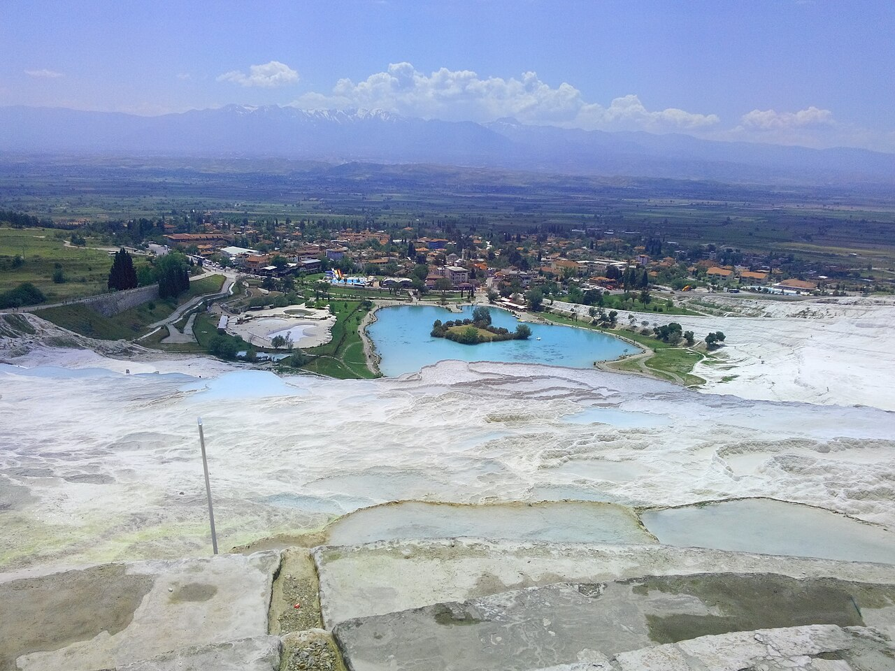

Comprende el entorno
Empieza por el paisaje y el papel del lugar en la región del Egeo.

Guía de destinos Scala Nova
Paisajes de travertino y el entorno arqueológico de Hierápolis.
Conoce el lugar
Paisajes de travertino y el entorno arqueológico de Hierápolis.
Utiliza la guía como contexto y conecta el destino con un tour privado o una ruta adaptada a tu tiempo.
Empieza por el paisaje y el papel del lugar en la región del Egeo.
Reserva tiempo para las explicaciones, los paseos y las pausas.
Añade destinos cercanos solo cuando el día siga siendo equilibrado.
Respuestas para planificar
Información útil antes de confirmar la ruta.
Paisajes de travertino y el entorno arqueológico de Hierápolis. Un plan privado permite dedicarle el tiempo y el contexto que merece.
Sí. Podemos planificar una salida y un regreso privados según tu alojamiento o el horario del barco.
Se puede considerar una segunda parada si el tiempo de traslado, el acceso y el ritmo elegido lo permiten.
Las pausas y el orden de las visitas pueden adaptarse al grupo y a las condiciones del lugar.
Los horarios, las entradas y otros detalles variables se vuelven a comprobar al cerrar la ruta.